강타 곰 공격 근접 기원 기폭 장치 깃발 냉기 늑대인간 단계 메타 명령 물리 바람 반려수 발동 버프 번개 보주 소환수 식물 연발 사격 가능 연쇄 오라 와이번 위해 요소 유지형 유탄 이동 전용 잔류물 저주 전령 조건부 주문 지속시간 지속형 집중 유지 징표 청산 카오스 타격 탄약 토템 투사체 폭발 폭풍 함성 합쳐짐 형태 변환 화염 효과 범위
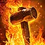
재의 전령 (1), , , , ,
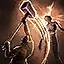
뼈 박살 (1), , ,
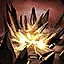
지진 (1), , , ,
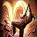
몰려오는 강타 (1), , ,
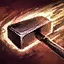
방어구 파괴자 (3), , , ,
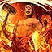
지옥불 함성 (3), , , , ,
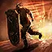
방패 돌진 (3), , , , ,
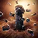
충격파 토템 (3), , , , , ,
재의 전령 (4), , , , ,
철의 수호 (4), , , ,
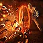
마그마 장벽 (4), , , , , ,
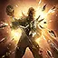
주운 판금 (4), , ,
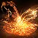
녹아내린 폭발 (5), , ,
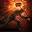
완벽한 타격 (5), , , , ,
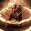
공명하는 방패 (5), , , , ,
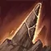
지면 분쇄 (7), , , ,
도약 강타 (7), , , , ,
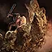
방패의 벽 (7), , , ,
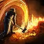
화산 균열 (7), , , , , ,
압도적인 존재감 (8), ,
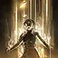
긴요한 시기 (8), ,
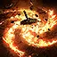
대장간 망치 (9), , , , , ,
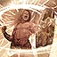
보강하는 함성 (9), , , , , , ,
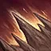
산산조각 (9), , , , ,
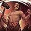
지진 함성 (11), , ,
쇄도 (11), , , , ,
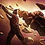
초과 충전 강타 (11), , , , ,
선대의 함성 (13), , , , , , , , , , ,
선대의 전사 토템 (13), , , , , ,
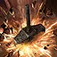
신들의 망치 (13), , , , ,
광폭 (14),
영원한 격노 (14),
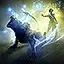
반려수: {0} (1), ,
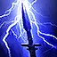
천둥의 전령 (1), , , , , ,
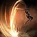
철수 (1), , , ,
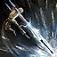
탈출 사격 (1), , , ,
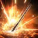
폭발 창 (1), , , , , ,
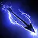
번개 화살 (1), , , , ,
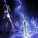
피뢰침 (1), , , , , ,
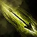
독 폭발 화살 (1), , , , ,
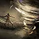
돌개바람 (1), , , , ,
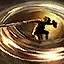
소용돌이 베기 (1), , , , ,
약자 솎아내기 (3), , ,
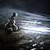
서리의 송곳니 (3), , , ,
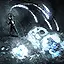
얼어붙는 포화 (3), , ,
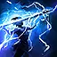
번개 창 (3), , , ,
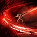
갈퀴질 (3), , , ,
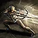
저격 (3), , , , , ,
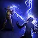
폭풍 소환사 화살 (3), , , , ,
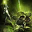
덩굴 화살 (3), , , , , ,
천둥의 전령 (4), , , , , ,
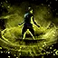
독성 운반자 (4), , , , ,
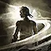
바람의 무희 (4), , , , , ,
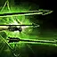
연발 사격 (5), ,
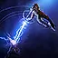
전기 처형의 화살 (5), , , , ,
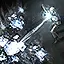
얼음촉 화살 (5), , , , , , ,
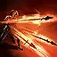
신속한 공격 (5), , , , ,
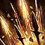
창의 지대 (5), , , , ,
폭풍의 창 (5), , , , , ,
맹독성 종양 (5), , , , ,
피의 사냥 (7), , , , ,
가스 화살 (7), , , , , ,
빙하 창 (7), , , , ,
원시 타격 (7), , , , ,
저격수의 징표 (7),
전도성 징표 (7), , ,
전투 격분 (8),
역병의 전령 (8), , ,
신기루 궁수 (8), , , ,
마름쇠의 발자취 (8), , , , , , , ,
피사냥개의 징표 (9), , , , , ,
폭발 화살 (9), , , , , , ,
얼음 화살 (9), , ,
화살비 (9), , ,
짐승 길들이기 (9), , ,
천둥 같은 도약 (9), , , , , ,
원소 작렬 (11), , , , , , ,
감전연쇄 화살 (11), , , , , ,
회오리 사격 (11), , , , , ,
와류 기병창 (11), , , , ,
자성 포화 (13), , ,
솔라리스의 창 (13), , , , ,
나선 사격 공세 (13), ,
맹독성 영역 (13), , , , , ,
바람 독사의 광분 (13), , , , ,
연금술사의 은혜 (14), ,
로아 탈것 (14), , ,
뼈 폭발 (1), , ,
동결 시 시전 (1), , , ,
점화 시 시전 (1), , , ,
감전 시 시전 (1), , , ,
카오스 화살 (1), ,
전도성 (1), , , ,
부패 (1), , , ,
[DNT] Crushing Earth (1), , ,
어둠의 서약 (1), , , ,
단련 (1), ,
피폐의 폭발 (1), , , ,
방혈 (1), , ,
육체의 연회 (1), , ,
화염 화살 (1), , ,
인화성 (1), , , ,
동결의 파편 (1), ,
노호 (1), , ,
충격장 (1), , , , , , ,
얼음의 심장 (1), , , ,
체온저하 (1), , , ,
부정함 (1), , ,
낙뢰 (1), ,
적의 (1), , ,
마나 고갈 (1)
굴절의 거울 (1), ,
권능 착취 (1),
불의 순수함 (1), , ,
얼음의 순수함 (1), , ,
번개의 순수함 (1), , ,
낫질 (1), , ,
힘의 부적 (1), , ,
해골 저격수 (1), , , ,
해골 전사 (1), ,
태양의 보주 (1), , , , ,
영혼 분리 (1), , ,
주문투척 (1), , , ,
낙뢰 (1), , ,
불씨 일제 사격 (1), , , , ,
전기불꽃 (1), , , , ,
고사시키는 존재 (1), , , ,
촉발 (1), ,
시체 불덩이 (1), ,
위축 (1), , , ,
전염 (1), , ,
화염 벽 (1), , ,
서리 폭탄 (1), , , , ,
얼음 폭발 (1), , , ,
해골 저격수 (1), , , ,
전기불꽃 (1), , ,
발굴 (1), , , ,
뼈 창살 (3), , , ,
쇠약화 (3), , ,
정수 흡수 (3), , ,
화염구 (3), , ,
서리 화살침 (3), , , ,
살아있는 폭탄 (3), , , ,
폭풍 보주 (3), , , , , , ,
해골 방화범 (3), , ,
한기의 방어구 (4), , , , ,
요양 (4), , ,
으스스한 연회 (4), , , ,
마나 잔류물 (4), ,
격노의 유령 (4), , , ,
굶주린 무리 (4), , , , ,
고사시키는 존재 (4), , , ,
연쇄 번개 (5), , ,
뼈 폭풍 (5), , , , ,
불씨 일제 사격 (5), , , ,
서리 구체 (5), , ,
고통의 공물 (5), , , ,
좀비 소환 (5), ,
해골 서리 마법사 (5), ,
돌발 (5), , , , , ,
망령 속박 (7),
시체 폭발 (7), , , ,
원소 약화 (7), , , , , ,
마나 폭풍 (7), , ,
부정한 의식 (7), , ,
시간의 사슬 (7), , ,
취약성 (7), , , ,
신성 모독 (8), , , ,
점멸 (8), , ,
소환수 사망 시 시전 (8), , , ,
원소 착취 (8), , , , ,
어둠의 제웅 (9), , , , ,
절망 (9), , , ,
서리 방벽 (9), , ,
소각 (9), , , , ,
번개 차원 이동 (9), , , ,
해골 강탈자 (9), ,
구형 번개 (11), , , , , ,
뼈 공물 (11), , , ,
혜성 (11), ,
화염 폭풍 (11), , , , ,
사술 폭발 (11), , ,
해골 폭풍 마법사 (11), ,
겨울의 눈 (13), ,
화염파 (13), , , , ,
번개 도관 (13), ,
해골 돌격병 (13), , , ,
해골 성직자 (13),
영혼 공물 (13), ,
대마법사 (14), ,
치명타 시 시전 (14), , ,
원소 상태 이상 시 시전 (14), , , , , ,
원소 융합 (14), , , , ,
희생 (14), ,
선대의 혼백 (1), ,
종말 (1), , , , , , , , ,
운명 정렬 (1),
출혈의 혼합물 (1), , ,
루잔의 덫 (1), , , , ,
루잔의 광분 (1), , ,
루잔의 선고 (1), ,
켈라리의 기만 (1), , ,
켈라리의 심판 (1), , ,
나비라의 우물 (1),
나비라의 파열 (1), ,
나비라의 오아시스 (1), ,
켈라리의 악담 (1), , ,
원소 표현 (1), , , , , , ,
원소 폭풍 (1), , , , , , ,
비취에 갇힘 (1), , ,
폭발성 혼합물 (1), , ,
전격의 혼합물 (1), , ,
생명 잔류물 (1), ,
명상 (1),
취약성의 순간 (1), ,
산성 혼합물 (1), , ,
산산조각의 혼합물 (1), , ,
불타는 검 루잔 (1), , ,
지옥불 사냥개 소환 (1), , ,
더럽혀진 사막 켈라리 (1), , ,
최후의 신기루 나비라 (1), , ,
원소 쇄도 (1), , , , ,
족쇄 풀린 화신 (1), , , , ,
촉발 (1), ,
점멸 (1), ,
피 종기 (1), , , ,
명중 시 화염 주문 (1), , , ,
막기 시 시전 (1), , ,
부패 (1), , , , ,
악마 형상 (1),
피할 수 없는 고뇌 (1), , ,
균열 속으로 (1), ,
무기 현현 (1), ,
지정 사격 (1), , ,
신기루 명사수 (1), , , ,
흘려보내기 (1), , , ,
도끼 베기 (1), , ,
철퇴 타격 (1), , ,
검 베기 (1), , ,
도끼 베기 (1), , ,
철퇴 타격 (1), , ,
검 베기 (1), , ,
도끼 베기 (1), , ,
활 사격 (1), ,
클로 찌르기 (1), , ,
클로 찌르기 (1), , ,
석궁 사격 (1), , ,
단검 찌르기 (1), , ,
단검 찌르기 (1), , ,
도리깨 타격 (1), , ,
철퇴 타격 (1), , ,
육척봉 타격 (1), , ,
창 찌르기 (1), , ,
창 찌르기 (1), , ,
창 투척 (1), , ,
검 베기 (1), , ,
주먹질 (1), , ,
의식 희생 (1),
방패 들기 (1), , , ,
마술의 수호 (1), , , , ,
신성화 (1), , ,
지원 사격 (1),
무기 담금질 (1), , , , , ,
시간의 균열 (1), ,
시간 동결 (1), ,
시간 단절 (1)
얼음의 전령 (1), , , , , ,
공허 환상 (1), , , , ,
방어구 관통 탄환 (1), , ,
얽어매기 (1), , , , ,
폭발 유탄 (1), , , , ,
떨어지는 천둥 (1), , , , ,
파편 탄환 (1), , , , ,
얼어붙은 궤적 (1), , , ,
분개한 강타 (1), , , , ,
빙하 폭포 (1), , , ,
살상 장법 (1), , , ,
달의 공격 (1), , , , , ,
영구 결빙 볼트 (1), , , , ,
화산 (1), , , , , ,
섬광 유탄 (3), , ,
고속 탄환 (3), , , , ,
소이 사격 (3), , , , ,
몰려오는 마그마 (3), , , , , ,
충격 장법 (3), , , , , , , ,
폭풍의 종 (3), , , , ,
바람 폭발 (3), , ,
날개 돌풍 (3), , , , ,
급습 (3), , , , , , , , , , ,
소모 (4),
가시밭 (4), , , , , , ,
혼의 춤 (4), ,
피의 전령 (4), , , , , ,
얼음의 전령 (4), , , , , ,
야만적인 광분 (4), ,
전쟁 깃발 (4), , , , , ,
산의 광분 (5), , , , , , , ,
충격 파편 (5), , , , ,
얼음 파편 (5), , , , , ,
얼음 타격 (5), , , ,
신속한 사격 (5), , ,
폭풍의 질풍 (5), , , ,
뇌우 (5), , , , ,
가스 유탄 (5), , , , , ,
뜀틀 충격 (5), , , , , , ,
한기의 울부짖음 (5), , , , , , ,
포식 (5), , , , ,
포대 쇠뇌 (7), , , , ,
폭발성 사격 (7), , , , ,
사나운 포효 (7), , , , ,
동결의 징표 (7), , ,
빙하 볼트 (7), , , , ,
주문 토템 (7), , , ,
전도성 유탄 (7), , , , ,
착취 타격 (7), , , , ,
폭풍 파도 (7), , ,
서리의 파도 (7), , ,
십자 베기 (7), , , ,
껍질피부 (8), ,
방어 기원 (8), , , ,
저항의 깃발 (8), , , , , ,
원소 기원 (8), , , , , , ,
지속되는 환상 (8), , ,
파편 청소부 (8), , , , , ,
늑대 무리 (8), , ,
충전 지팡이 (9), , , , , ,
차율라의 손 (9), , , , ,
파괴의 주문 (9), , ,
기름 포화 (9), , , , , ,
기름 유탄 (9), , , , ,
공성 쇠뇌 (9), , , , , ,
태풍 파열 볼트 (9), , , , ,
몸부림치는 덩굴 (9), , , , ,
광란 (11), , , , , , , ,
비상 재장전 (11),
우박폭풍 탄환 (11), , , , ,
박격포 대포 (11), , ,
격파 장법 (11), , , , ,
감전 파열 탄환 (11), , , , ,
회오리 (11), , , , ,
선회 공격 (11), , ,
집속 유탄 (13), , , ,
점멸 타격 (13), , ,
몰려드는 폭풍 (13), , , , , ,
플라스마 폭발 (13), , , , ,
공성 폭포 (13), , , ,
걸어다니는 대재난 (13), , , , , , , ,
달의 축복 (13), , , , , , , , ,
화염 숨결 (13), , , , , , , ,
회피 구르기 시 시전 (14), , ,
충전 제어 (14),
공포의 깃발 (14), , , , , ,
야생의 기원 (14), , ,
수확자의 기원 (14), , , ,
삼위일체 (14), , , ,
도약 강타 공중으로 도약 후 착지하면서 무기로 적들에게 피해를 주고 . 착지 지점의 적은
바깥으로 밀려납니다.
방패 돌진 해서 대상 방향으로 돌진합니다. 이동 경로상의 적과 충돌하면 돌진이 중단되고 해당 지역 내의 적들에게 피해를 주며, 충돌한 적들에게는 추가 피해를 줍니다. 돌진하는 동안 를 들어 받는 모든 공격을 .
방어구 파괴자 강력한 일격으로 하여, 적들을 밀어내고 를 약화시킵니다.
충격파 토템 주위 지면을 하여 주변의 적들에게 반복적으로 피해를 주는 을 세웁니다. 이 가 명중하면 가 분출됩니다. 은 를 생성할 수 없습니다. 이 스킬은 상태에서 사용할 수 있습니다.
재의 전령 활성화된 동안, 비- 으로 충분한 피해를 줘서 적을 처치하면 폭발을 일으켜 준 피해에 기반하여 주변의 적들을 시킵니다.
지옥불 함성 을 질러, 주변에 적이 있다면 이어지는 을 합니다. 함성의 범위 안에 있는 적들은 불안정해지고 사망 시 발화됩니다. 이 스킬의 재사용 대기시간은 을 소모하여 무시할 수 있습니다.
지진 지면을 강타해 범위 내에 피해를 주고, 적을 감속시키는 를 남깁니다. 는 잠시 후 강력한 을 일으키며 폭발합니다. 기존 지대 위에는 를 생성할 수 없으며, 이미 활성화되어 있는 지대의 수가 한도에 도달했을 경우에는 를 생성할 수 없습니다.
산산조각 지면을 하면 요동치는 균열이 전방에 여러 개의 범위를 생성하며 순차적으로 피해를 줍니다. 파도에 맞은 적의 상당수는 충격파를 방출하여 다른 적들에게 피해를 줍니다. 적을 명중시키면 를 적용하여, 적이 추가로 증가한 피해를 받게 합니다.
지진 함성 피해를 주는 을 질러 주변의 적들을 상태의 적은 시킵니다. 적이 하거나 이미 해 있는 적에게 하면 이 스킬이 다음 를 하여 추가 을 발생시킵니다. 이 기술의 재사용 대기시간은 을 소모하여 무시할 수 있습니다.
지면 분쇄 지면을 하여 적에게 범위 피해를 주는 균열 1개를 생성하고, 균열이 사라지면 가시를 방출하여 균열이 지나간 범위의 적들에게 피해를 줍니다. 자신 또는 동료가 가시 근처에서 을 사용하면 가시가 산산조각 나며 주변 적에게 피해를 줍니다.
뼈 박살 근접 으로 적들을 공격합니다. 은 상태의 적들에게 을 유발합니다. 을 유발하면 충격파를 생성하여 범위 내에 대량의 피해를 줍니다.
화산 균열 지면을 하여 갈라지는 을 생성합니다. 균열은 이동하면서 피해를 주고, 일정 시간 동안 남습니다. 에 다른 스킬을 사용하면 확산되는 이 일어납니다.
몰려오는 강타 지면을 해서 적들을 시키고 뒤로 후 계속 앞으로 전진하며 강력한 두 번째 를 수행합니다.
초과 충전 강타 하여 강력한 휘두르기 공격을 충전하고, 지면에서 흙을 끌어올려 철퇴 크기를 키웁니다. 집중을 해제하면 지면을 하여 충격 지점 주위의 범위에 피해를 주고, 뒤이어 으로 더 넓은 범위에 피해를 줍니다.
선대의 전사 토템 을 3개 소모하여 장착된 스킬을 사용하는 을 세웁니다. 집중 유지 스킬이나 재사용 대기시간이 있는 스킬은 사용할 수 없습니다.
완벽한 타격 하여 무기를 으로 충전합니다. 에 방출하면 피해를 주는 격렬한 파도가 일어납니다.
공명하는 방패 무기로 반복해서 를 두드려 주위 범위에 피해를 주는 충격파를 일으킵니다. 충격파에 피격된 적들은 일정 시간 동안 를 잃습니다. 호응하는 방패에 하는 동안에는 를 들어 받는 모든 공격을 .
마그마 장벽 활성화된 동안 따로 조작하지 않아도 이 증가하고 에 지속적으로 용암이 주입됩니다. 를 올린 상태로 하는 다음 가 용암을 소진하여 폭발을 일으키고 플레이어에게 을 부여합니다.
주운 판금 활성화된 동안 적들에게서 주운 방어구 파편을 사용해서 자신의 방어구를 보강합니다. 적의 를 하면 적의 희귀도에 따라 일정 시간 동안 주운 판금 중첩이 부여되고, 중첩 수에 따라 와 를 얻습니다. 일반 적은 1중첩, 마법 적은 2중첩, 희귀 적은 5중첩, 고유 적은 10중첩이 부여됩니다.
녹아내린 폭발 지면에서 녹아내린 바위를 끌어내 대상에게 던집니다. 충돌 시 가 폭발하여 적들에게 피해를 주고 뒤쪽 부채꼴 범위에 파편을 뿌립니다.
신들의 망치 적을 시켜 을 축적합니다. 이 최대일 때, 선조들에게 적들을 짓밟아달라고 간청하여 거대한 망치를 현현시키고 하늘에서 대상에게 떨어뜨릴 수 있습니다. 망치는 잠시 후에 지면을 하고 플레이어의 무기에 기반해 막대한 피해를 줍니다.
쇄도 전방으로 돌진하여 대지에 균열을 생성하고 걸음을 옮길 때마다 를 남깁니다. 돌진이 종료되면 큰 도약 가 적들에게 피해를 주고, 주변의 모든 가 폭발하여 안에 서 있는 적에게 피해를 줍니다. 돌진을 시작한 후에는 이 스킬의 사용 속도가 속도가 아닌 이동 속도의 영향을 받습니다.
방패의 벽 로 지면을 강타하여 대지의 벽을 세워 올립니다. 적은 벽의 부분을 공격할 수 있으며, 플레이어는 , , 방패 돌진으로 벽을 모두 부술 수 있습니다. 벽의 부분이 부서지면 폭발을 일으켜 전방과 주위의 적들에게 피해를 줍니다.
보강하는 함성 를 부여하고 이어지는 방패 이 피해를 줄 때 방어 파장을 시키는 을 내지릅니다. 이 스킬의 재사용 대기시간은 을 소모하여 무시할 수 있습니다.
긴요한 시기 활성화된 동안 주기적으로 신의 축복을 발생시켜 자신을 치유하고, 와 을 제거합니다.
압도적인 존재감 활성화된 동안 해 있는 적들에게 및 이 더 쉽게 유발되도록 하는 를 방출합니다.
광폭 활성화된 동안 가 강화되지만, 를 잃지 않는 동안에는 생명력을 잃습니다.
재의 전령 활성화된 동안, 비- 으로 충분한 피해를 줘서 적을 처치하면 폭발을 일으켜 준 피해에 기반하여 주변의 적들을 시킵니다.
철의 수호 활성화된 동안, 또는 기타 피해 감소 수단으로 방지되는 피해의 일부를 저장합니다. 이 스킬을 사용하면 저장된 피해를 가시 폭발로 방출합니다.
대장간 망치 불타는 망치를 던집니다. 망치는 바닥을 하고 바닥에 꽂힙니다. 망치가 바닥에 꽂혀 있는 동안 이 스킬을 다시 사용하면 망치가 돌아오고 스킬의 재사용 대기시간이 초기화됩니다. 또는, 바닥에 꽂힌 망치 근처에서 을 사용하면 망치가 박살 나며, 여러 개의 이 나선형으로 뻗어 나갑니다.
선대의 함성 적을 하여 얻은 을 사용해 을 내질러, 카옴의 화신으로 변합니다. 카옴의 화신인 동안에는 이동할 때 화산 걸음이 하고, 과 가 되고, 시 화산 분출이 합니다.
저격수의 징표 대상에게 를 찍습니다. 대상이 받는 다음 이 를 하고 하여 추가 피해를 주고 플레이어에게 을 부여합니다.
화살비 화살을 공중으로 퍼부어 위쪽에서 비처럼 쏟아지게 합니다. 을 하여 더 많은 화살을 발사합니다.
번개 화살 번개로 충전된 화살을 발사합니다. 적 또는 벽에 명중하면 화살이 주변의 적들에게 를 발사합니다.
연발 사격 화살 또는 창을 연속으로 발사할 준비를 하며 연발 사격이 가능한 다음 또는 을 하여 공격이 여러 번 되게 합니다. 사용 시 을 소모하여 추가로 반복됩니다.
천둥의 전령 활성화된 동안 된 적을 비- 으로 처치하면 이어지는 시 번개를 방출하여 주변의 모든 적들에게 피해를 줍니다.
독성 운반자 활성화된 동안 주는 피해의 일부를 저장합니다. 이 스킬을 사용하면 저장된 을 피해로 방출하고 주위 적들에게 을 유발합니다.
신속한 공격 여섯 번 연속으로 빠른 찌르기 공격을 수행합니다. 마지막 찌르기가 을 유발하고, 대상에게 창날이 꽂혀 일정 시간 동안 대상의 합니다. 스킬은 꽂힌 창날을 폭발시켜, 대상과 주변의 다른 적들에게 추가 피해를 줍니다.
철수 도약하여 물러나며 창끝으로 전방의 흙을 파헤쳐 적들에게 피해를 줍니다. 적 시 를 하여 충격파를 방출하고 플레이어에게 을 부여합니다. 이 스킬은 다른 스킬을 사용하는 동안 사용할 수 있으며, 도약하는 동안에는 과 가 플레이어를 빗나갑니다. 이 스킬은 되지 않습니다.
피의 사냥 대상에게 달려들어 꿰뚫습니다. 을 겪은 적을 명중시키면 피의 폭발이 일어나고, 을 합니다. 이 스킬은 되지 않습니다.
소용돌이 베기 무기를 원형으로 휘둘러 주위에 를 불러일으키며 효과 범위 내의 적들을 시키고 시킵니다. 해당 범위를 떠나면 폭풍이 붕괴하며 피해를 주고 를 유발합니다.
창의 지대 지면을 찔러 전방 넓은 범위에 다수의 창들이 튀어나가게 합니다. 이 창들은 일정 시간 동안 유지되며, 적이 접촉하면 폭발하며 피해를 주고 합니다.
번개 창 창의 복제물 1개를 투척합니다. 적에게 적중하면 폭발하며 주위 넓은 범위 내에 있는 다수의 적에게 이차적인 벼락 를 발사합니다. 가능하면 을 소모하여 명중 시 주 창을 다수의 복제로 분열시키고, 이후 각각 폭발시킵니다.
빙하 창 지나간 자리에 얼음 파편을 남기는 기병창을 1개 던집니다. 파편은 주변의 적들을 시킵니다. 가능한 경우 을 소모하여 첫 번째 로 생성된 빙하 파편을 잠시 후 바깥으로 폭발시키고, 작은 파편을 적들에게 흩뿌립니다.
탈출 사격 뒤쪽으로 도약하며, 탈출을 시작한 위치 주변의 적들을 또는 시키는 얼어붙은 화살을 발사합니다. 이 화살은 충돌 시 을 생성합니다.
나선 사격 공세 에 마법에 걸린 화살을 장전하고 회전해서 앞으로 나아가며 원형으로 발사합니다. 가능한 경우 대상에게 직접 발사합니다. 을 소모하여 화살이 주는 피해를 증폭시키고 다른 대상에게 되게 합니다. 대상 하나에게 한 번씩만 할 수 있습니다.
폭발 화살 하여 충전한 후 불타는 화살을 발사합니다. 최대 단계일 때 화살이 비행 종료 시 하는 폭발을 일으킵니다.
독 폭발 화살 병독성 화살을 발사하여, 명중 시 폭발을 일으키고 범위 내의 모든 적들에게 영향을 줍니다.
맹독성 종양 공중으로 맹독성 농포를 비처럼 발사합니다. 농포는 충격 시 피해를 주고, 일정 시간 후 됩니다. 농포는 될 수도 있으며, 이 경우 더 빠르고 더 격렬하게 됩니다.
폭풍 소환사 화살 짧은 시간 동안 떨어진 지점을 파고드는 화살을 발사합니다. 지연시간이 종료되면 줄기가 화살을 강타하여 화살을 소멸시키면서 적들에게 피해를 주고 높은 확률로 시킵니다. 이 번개 줄기가 적을 하나라도 시키면 충격 지점 주위의 적들에게도 을 적용합니다.
피뢰침 위에서 떨어지는 화살을 발사하여 폭발을 일으킵니다. 화살은 지면에 남아 모든 줄기가 화살에 되게 합니다. 화살에 되면, 화살들이 잠시 동안 충전되고 또 한 번 폭발을 방출합니다. 번개 화살 스킬은 이 지연 시간을 감소시켜, 폭발이 더 빨리 일어나게 합니다.
저격 하여 활을 충전한 후 강력하게 발사합니다. 에 활을 발사하면 화살이 충격 시 폭발하며, 직접 시 을 합니다. 을 하면 폭발이 강화됩니다.
가스 화살 지면에 유독성 화살을 발사하여 비행 종료 시 가연성 독성 가스 구름을 생성합니다. 구름에 스킬이 명중하거나 상태의 적이 접촉하면 화염 폭발이 일어납니다.
전기 처형의 화살 시 일정 범위 내에서 폭발하는 감전시키는 화살을 발사합니다. 적에게 하면 전기 처형의 피뢰침을 적에게 꽂아 받는 모든 피해가 효과를 축적하게 합니다. 적이 다음에 되면 피뢰침은 사라집니다.
덩굴 화살 화살을 공중에 발사합니다. 화살은 짧은 지연시간 후에 떨어지며 적에게 피해를 주고 충돌 지점에 식물을 싹틔웁니다. 식물은 덩굴을 키워내 주변의 적들에게 달라붙고, 적들의 이동 속도를 시키고 피해를 줍니다. 식물은 될 수 있으며, 이 경우 더 많은 피해를 줍니다.
로아 탈것 또는 을 장착하고 있는 동안 탈 수 있는 로아에게 고삐를 씌웁니다. 타고 있는 동안에는 과 투척, 스킬을 사용할 수 있고, 스킬을 사용하는 동안에 훨씬 덜 느려지지만, 당하면 축적이 유발됩니다. 타고 있지 않을 때 로아는 플레이어의 적을 부리로 함께 공격하지만, 피해를 받을 수 있습니다.
돌개바람 을 휘둘러 돌개바람을 일으킵니다. 돌개바람은 천방지축으로 전진하며 안에 휘말리는 적들을 시키고 반복적으로 합니다. 돌개바람이 다른 스킬의 와 접촉하면, 를 소모하여 증폭된 피해를 주는 추가 돌개바람을 생성합니다. 위를 지나가거나 원소 를 소모하면, 해당 원소의 추가 피해를 주는 돌개바람이 일어납니다.
폭발 창 적을 관통하고 바닥에 떨어져 꽂히는 탄두 을 1개 날립니다. 은 이 끝나거나 되면 폭발합니다. 을 보유하고 있는 경우 이를 소모하여 즉시 폭발시키면 십자형의 지역에 더 큰 피해를 주고 를 남깁니다.
천둥 같은 도약 공중으로 도약한 후 을 바닥의 목표 지점에 내리꽂아, 를 띤 충격파를 발산합니다.
바람의 무희 활성화된 동안, 단계의 수에 따라 를 증폭시키는 버프의 단계를 부여합니다. 이 버프가 부여된 상태에서 적에게 당하면 모든 단계를 소모하여 주변의 적들에게 피해를 주고 .
감전연쇄 화살 번개로 충전된 화살을 발사하여 에 걸린 적들을 추적합니다. 그런 적에게 명중하면 화살이 피해를 주는 충격파를 방출하고 주변 대상들을 향해 되며, 된 역시 충격파를 방출합니다. 화살은 마지막 후에 바닥에 꽂혀 피뢰침이 됩니다. 하는 적의 은 하지만, 은 소모하지 않습니다.
얼음 화살 대상 명중 시 부채꼴 범위에 얼음 파편을 흩뿌리는 얼음 화살을 발사합니다.
전도성 징표 대상에게 를 찍어 에 취약하게 합니다. 가 찍힌 대상이 되면 가 되면서, 추가 피해를 부여하는 를 부여하고 가 됩니다. 를 적용받는 동안에 다른 대상에게 를 찍으면 가 사라집니다.
회오리 사격 하늘을 향해 사격한 후 떨어진 지점에서 회오리를 일으켜 지속 피해를 주고 회오리 안 적들의 합니다. 회오리를 향해 발사되는 화살과 , 볼트는 회오리로 빨려 들어가고, 회오리가 복제된 를 고리 모양으로 방출합니다. 한 번 복제된 는 추가적인 회오리가 일어나도 다시 복제되지 않습니다.
연금술사의 은혜 활성화된 동안 지속적으로 충전을 부여하고, 플레이어의 로 인한 생명력 및 마나 회복이 해 있는 에게도 적용되게 합니다.
자성 포화 하늘을 조준하여, 다른 으로 생성되어 전방에 남아 있는 볼트 또는 화살에 에너지 미사일을 발사합니다. 미사일은 남아 있는 볼트 또는 화살 가까이 떨어지면 폭발하여, 더 넓은 범위에 더 큰 피해를 주지만 그 볼트 또는 화살은 파괴됩니다.
얼어붙는 포화 지속적으로 공기를 응결시켜 얼음 미사일을 만듭니다. 스킬을 사용하면 만들어진 미사일의 수만큼 미사일을 발사합니다. 효과 범위 내에 있는 각각의 을 대상으로 최대 현재 미사일 수까지 추가적인 미사일을 발사하여, 을 즉시 시킵니다.
역병의 전령 활성화된 동안 된 적을 처치하면 이 주변의 적들에게 퍼지고, 일정 확률로 적의 합니다.
신기루 궁수 활성화된 동안 회피 구르기를 하면, 신기루가 나타나서 짧은 시간 동안 장착된 원거리 을 사용하다가 사라집니다.
전투 격분 활성화된 동안 플레이어가 적을 시키거나 하거나 하면 을 부여받습니다. 몇 초에 한 번씩만 발동합니다.
천둥의 전령 활성화된 동안 된 적을 비- 으로 처치하면 이어지는 시 번개를 방출하여 주변의 모든 적들에게 피해를 줍니다.
와류 기병창 강력한 힘으로 을 투척하여 떨어지는 곳에 를 불러일으키고, 효과 범위 내의 적들을 및 시킵니다. 에 들어가면 와류가 붕괴하며 피해를 주고 를 유발합니다. 가능한 경우 을 소모하여 정상적인 최대 단계보다 단계가 1 높은 를 생성합니다.
원시 타격 를 띤 찌르기 공격을 가합니다. 이 공격은 최대 3회 연쇄시킬 수 있습니다. 첫 2회의 공격은 된 적에게 하면 야생림 혼백을 불러내고 지속시간을 초기화합니다. 3번째 은 큰 베기 공격으로, 을 유발하고 을 하여 혼백 떼를 불러낼 수 있습니다.
약자 솎아내기 적에게 질주하여 돌파하면서, 적의 생명력이 낮을 경우 을 가합니다. 이 공격으로 적을 하나 이상 처치하면 을 얻습니다. 가 높은 몬스터를 처치하면 을 추가로 얻습니다. 주변에서 을 가할 수 있는 적들은 강조 표시됩니다.
서리의 송곳니 이미 균형을 상실한 적들의 약점을 공략하는 얼음 찌르기를 수행합니다. 대상에게 명중시키면 를 하여 서리 폭발을 일으키고 를 남깁니다.
바람 독사의 광분 을 모두 소모하고 창을 크게 내질러 적들을 . 소모한 하나당 바람 독사 한 마리가 창의 궤적을 따라갑니다. 독사는 또한 각각 적들에게 피해를 주고 .
갈퀴질 적을 향해 질주한 후 짓찢는 베기를 수행하여, 적중당한 모든 적에게 을 유발합니다.
피사냥개의 징표 대상 하나에 를 찍어, 로 인한 을 축적하게 합니다. 적이 가 찍힌 동안 일정 수준의 을 겪으면, 가 되면서 되고 죽거나 할 때 피의 폭발을 일으킵니다. 가 찍힌 대상이 을 겪는 동안에는 의 지속시간이 만료되지 않습니다.
짐승 길들이기 아즈메리 도깨비불을 불러내 일정 시간 동안 를 휩싸게 하여 합니다. 가 도깨비불에 휩싸여 있는 동안 처치하면, 야수는 이 젬에 사로잡혀 젬으로 변형되고, 를 로 소환할 수 있습니다.
솔라리스의 창 적에게 , , 를 유발하여 을 축적합니다. 이 최대일 때, 아즈메리 여신 솔라리스를 불러내 뒤로 뛰면서 공중으로 을 던질 수 있습니다. 창은 바닥에 떨어지면서 범위 내에 큰 피해를 주고, 주기적으로 맥동하는 신성한 하늘 광선을 부르고 점차 넓어지는 를 생성합니다. 이 스킬에는 발사되는 개수에 적용되는 속성이 적용되지 않습니다.
폭풍의 창 전기를 띤 을 던집니다. 창은 바닥에 꽂힌 후 주변 적들을 주기적으로 로 공격합니다. 이 다른 스킬로 인해 되면, 즉시 낙뢰를 마구 퍼붓고 만료됩니다. 가능한 경우 을 소모하여 낙뢰를 더 자주 퍼붓고, 지속시간이 종료되면 자동으로 기폭하며, 기폭 시 를 생성합니다.
원소 작렬 을 바닥에 꽂아 주변 다수의 적과 , 에게 걸린 , , 를 하는 파동을 내보냅니다. 파동 자체는 피해를 주지 않지만, 된 이 해당 원소 피해 유형의 폭발을 일으킵니다.
맹독성 영역 주위의 지면에 맹독성 꽃의 영역을 생성합니다. 꽃 안에 있는 동안에는 스킬 비용이 증가하고 생명력이 재생되며, 이 맹독성 농포를 부착합니다. 이 농포는 될 수 있으며, 일정 시간 후 또는 이 일정 수준 이상 적용된 후 되어 저장된 피해에 따라 더 많은 피해를 주고 주위 지역에 을 적용합니다.
얼음촉 화살 활성화된 또는 을 준비하여 다음 연발 사격 가능 또는 을 하여 피해를 피해로 하게 하고, 시 을 생성하게 합니다. 이 스킬의 재사용 대기시간은 을 소진하여 넘길 수 있습니다. 스킬은 할 수 없습니다.
화염 화살 대상에게 불타는 를 날립니다. 는 충돌 시 폭발하여 작은 범위에 있는 적들에게 피해를 줍니다.
얼음 폭발 얼음 파동이 모든 방향으로 퍼져나가, 적들이 플레이어와 근접해 있는 정도에 따라 . 서리 구체 근처를 대상으로 얼음 폭발을 시전하면 투사체가 플레이어가 아닌 서리 구체를 중심으로 퍼져 나갑니다. 가능하면 을 해서 를 남깁니다.
시체 폭발 을 격렬하게 폭발시켜 주변 적들에게 피해를 줍니다.
시체 불덩이 을 소모하여 적을 추적하고 주변의 적들을 하는 폭발성 중심부를 생성합니다. 중심부는 지속시간이 끝나면 폭발합니다.
좀비 소환 또는 을 소모하여 단명하는 좀비 하나를 소환합니다. 으로 소환한 좀비는 되고, 강화되지 않은 좀비 둘을 추가로 생성합니다.
전기불꽃 적에게 명중하거나 만료될 때까지 천방지축으로 움직이는 전기불꽃 분사 를 날립니다. 을 하여 전기불꽃 여러 개를 나선형으로 발사할 수 있습니다. 가능하면 을 해서 원형으로 여러 개의 전기불꽃을 발사합니다.
전기불꽃 적에게 명중하거나 만료될 때까지 천방지축으로 움직이는 전기불꽃 분사 를 날립니다. 을 하여 전기불꽃 여러 개를 나선형으로 발사할 수 있습니다. 가능하면 을 해서 원형으로 여러 개의 전기불꽃을 발사합니다.
서리 방벽 적을 막는 벽을 생성합니다. 은 충분한 피해를 받거나 충분히 강하게 밀리면 폭발하여 주변의 적들에게 피해를 줍니다. 파괴될 경우 가능하면 을 소모하여 폭발을 한 번 더 추가합니다.
피폐의 폭발 피해를 주는 을 방출하여 적을 합니다. 가까이 있는 적은 피해를 받지 않지만, 고리의 가장자리에 있는 적은 훨씬 많은 피해를 받습니다. 당한 적은 짧은 시간 동안 모든 피해로 될 수 있습니다.
시간의 사슬 범위 내 모든 적에게 를 걸어 시킵니다. 이때 적에게 걸려 있던 다른 효과의 만료 시간도 더 느려집니다.
쇠약화 잠시 후 범위 내 모든 대상에게 를 걸어 피해를 낮춥니다.
절망 잠시 후 범위 내 모든 대상에게 를 걸어 을 낮춥니다.
번개 차원 이동 적 하나를 대상으로 지정합니다. 대상이 범위에 드는 경우 대상의 육신 안으로 순간이동하여 격렬하게 폭발시키고, 그렇지 않은 경우 지속시간 동안 대상이 범위에 들어가면 같은 효과를 일으키는 를 적용합니다. 구형 번개 에도 사용할 수 있습니다. 순간이동 시 대상은 파괴되고, 폭발이 주변의 적들에게 피해를 줍니다. 적이 대상으로 지정되어 있다면 폭발이 도 생성합니다. 성공적으로 사용하면 을 생성합니다. 이 가능한 적은 강조 표시됩니다.
화염 폭풍 목표 지역에 화염 볼트를 폭풍우처럼 퍼붓습니다. 세 가지 유형의 을 모두 할 수 있습니다. 되었을 때는 훨씬 큰 폭풍이 일고, 되었을 때는 번갯불이 떨어지고, 되었을 때는 얼음 볼트가 비처럼 떨어집니다.
권능 착취 적의 생기를 뽑아내려 합니다. 범위 내의 적들이 강조 표시되고 시 즉사하며 을 부여합니다. 범위 내의 적만 대상으로 지정할 수 있습니다.
단련 플레이어에게 해 있는 과 플레이어에게 을 추가로 부여하는 를 방출합니다.
연쇄 번개 시전자로부터 지정된 적에게 원호 형태로 가 뻗어 나가 주변의 적들에게 옮겨가며, 될 때마다 그 피해가 조금씩 감소합니다. 가능하면 을 하여 더 많은 피해를 주고 더 시킵니다.
한기의 방어구 활성화된 동안, 점차 단계가 증가하는 얼음 방벽을 생성합니다. 방벽 단계가 존재하는 동안에는 플레이어에게 명중한 이 방벽 단계를 1개 제거하고 얼음을 방출하여 공격자에게 피해를 줍니다.
인화성 잠시 후 범위 내 모든 대상에게 를 걸어 을 낮춥니다.
체온저하 잠시 후 범위 내 모든 대상에게 를 걸어 을 낮춥니다.
전도성 잠시 후 범위 내 모든 대상에게 를 걸어 을 낮춥니다.
원소 약화 잠시 후 범위 내 모든 대상에게 를 걸어 을 낮춥니다.
소각 아무 스킬에나 마나를 사용해 연료를 얻은 후, 모은 연료를 사용해 손에서 을 내뿜어 전방의 적들에게 를 유발합니다. 오래 할수록 불길이 강해집니다. 가능하면 을 하여 도 생성합니다. 이 스킬을 사용하는 동안에는 연료를 얻을 수 없습니다.
불의 순수함 플레이어에게 해 있는 과 플레이어의 을 증가시키는 를 방출합니다.
얼음의 순수함 플레이어에게 해 있는 과 플레이어의 을 증가시키는 를 방출합니다.
번개의 순수함 플레이어에게 해 있는 과 플레이어의 을 증가시키는 를 방출합니다.
부정함 플레이어에게 해 있는 과 플레이어의 을 증가시키는 를 방출합니다.
화염파 하여 플레이어의 주위에 파괴적인 에너지를 축적합니다. 에너지를 방출하면 파괴적인 폭발을 일으키며, 를 지속할수록 효과 범위와 폭발의 피해가 증가합니다.
구형 번개 천천히 적 사이를 움직이는 를 1개 발사합니다. 그 자체는 적을 하지 않지만, 주변의 적들에게 반복적으로 를 방출합니다. 가능하면 을 소모하여 점점 느려지고, 이동하면서 를 생성하고, 사라진 후에 폭발하며 범위 내에 피해를 줍니다.
뼈 공물 뼈 가시로 해골을 꿰뚫어 가시가 남아 있는 동안 를 보호하여, 으로 받는 피해의 양을 감소시킵니다. 일정 기준을 초과하는 피해를 주는 을 받으면 해당 의 방패가 그 의 모든 피해를 흡수한 후 폭발합니다. 뼈 가시 자체도 로 간주되어 방패의 보호를 받습니다. 가시가 죽으면 다른 의 방패도 사라집니다.
신성 모독 장착한 스킬을 끔찍한 로 바꾸어, 주변의 모든 적들에게 해당 효과를 부여합니다.
서리 폭탄 맥동하는 서리 를 생성합니다. 맥동할 때마다 주변의 적들에게 을 유발합니다. 의 지속시간이 종료되면 되어 주변 적들에게 피해를 주고 을 남깁니다.
폭풍 보주 전기 를 생성하여 주변 적들에게 를 방출합니다. 는 만료될 때 을 남깁니다.
전염 하나의 적에게 지속 피해를 주는 를 겁니다. 전염의 영향을 받는 동안 적이 사망하면, 전염과 다른 모든 지속 피해를 주는 가 주변의 적들에게 퍼지고 지속시간이 초기화됩니다. 전염의 영향을 받은 시신을 다시 일으키거나 폭발시키면 또는 폭발이
명중 시 전염을 퍼뜨립니다.
위축 쇠잔의 사술을 집중 유지하여 범위 내의 적들을 시킵니다.
정수 흡수 명중한 적에게 강력한 지속 피해 디버프를 유발하는 를 발사합니다.
서리 구체 천천히 움직이는 를 발사합니다. 투사체는 적을 시키는 데 효과적이고 지형과 충돌하면 폭발합니다.
어둠의 서약 의 생명력을 희생하여 주변 지역에 피해를 줍니다. 가 없으면 자신의 생명력이 대신 희생됩니다.
해골 전사 활성화 시 능력이 있는 해골 전사를 소환합니다.
해골 강탈자 활성화 시 능력이 있고 공격적인 해골 강탈자를 소환합니다. 을 내리면 격앙됩니다. 해골 강탈자는 에 따라 더 많은 피해를 주고 속도가 빨라집니다.
해골 돌격병 활성화 시 하는 해골 돌격병을 소환합니다. 해골 돌격병은 강한 공격으로 적을 시킬 수 있고, 에 따라 을 내지릅니다. 이 은 주변 적들을 하고 적과 동료의 을 소모하여 주변 지역에 피해를 줍니다.
해골 저격수 활성화 시 능력이 있는 원거리 해골 저격수를 소환합니다. 을 내리면 가스 화살을 발사합니다.
해골 서리 마법사 활성화 시 능력이 있는 해골 서리 마법사를 소환합니다. 해골 서리 마법사는 에 따라 플레이어의 을 얼음 보호막으로 감쌉니다.
해골 폭풍 마법사 활성화 시 능력이 있는 해골 폭풍 마법사를 소환합니다. 을 내리면 해골 사체에 벼락을 떨어뜨립니다.
해골 방화범 활성화 시 능력이 있는 폭탄 투척 해골 방화범을 소환합니다. 을 내리면 다른 를 폭발시킵니다.
해골 성직자 활성화 시 능력이 있는 해골 성직자를 소환합니다. 해골 성직자는 다른 소환수를 치유하고 쓰러진 해골을 부활시킵니다.
취약성 잠시 후 범위 내 모든 대상에게 를 걸어, 대상에 대한 이 의 일부를 무시하게 합니다.
영혼 분리 적들을 추적하는 를 발사합니다. 명중한 적에게는 짧은 시간 동안 를 하고 피해를 주는 를 유발합니다.
힘의 부적 지면에 부적을 배치해 자신과 범위 내 에게 강력한 피해 를 부여합니다. 부적 범위 내에서 마나를 소모하면 부적이 단계를 획득하여 버프가 더욱 강력해집니다. 힘의 부적은 한 번에 하나만 얻을 수 있습니다.
화염 벽 캐릭터 앞에 의 벽을 생성하여 범위 내에 있는 모든 것을 합니다. 플레이어나 이 발사하는 가 이 벽을 통과하면 추가 피해를 줍니다. 가능하면 을 하여 에 피해도 더할 수 있습니다.
사술 폭발 범위 내의 모든 적에게 걸린 를 기폭하여 피해를 주는 폭발을 일으키지만, 는 제거합니다. 지속시간이 절반 이상 만료된 만 기폭할 수 있습니다.
방혈 자신의 피를 전방 부채꼴 범위에 피 촉수로 방출합니다. 촉수가 한 적은 피해를 받고 합니다.
낫질 피투성이 낫을 생성하고 목표 지역을 휩쓸어 적들에게 피해를 주고 를 적용합니다. 이 스킬은 되지 않습니다.
겨울의 눈 적들에게 하지 않는 눈 를 1개 발사합니다. 눈은 나선을 그리며 비행하여 피해를 주는 파편 를 지속적으로 방출합니다. 눈이 또는 위를 통과하면 해당 지대의 효과를 흡수하여 파편이 해당 의 피해를 추가로 주게 합니다.
번개 도관 전방 부채꼴 범위에 를 불러내 모든 적을 명중합니다. 된 적에게 주는 피해가 크게 증폭됩니다. 대상 지역에 된 적이 있으면, 명중당한 대상들 사이에 추가적인 번갯불이 나뉘어 떨어집니다. 가까운 지점을 대상으로 지정하면 시전하면서 뒤로 도약합니다.
충격장 확률을 증가시키는 를 획득합니다. 적을 시키면 를 소모하여 해당 적에게 전기 를 부착합니다. 는 만료될 때까지 주변의 적들에게 전기 줄기를 발사합니다.
혜성 하늘에서 얼음 덩어리를 불러내려 대상 지점에 큰 피해를 줍니다. 가까이에 있는 대상을 지정하면 시전할 때 플레이어가 뒤로 도약합니다. 가능하면 을 하여 파괴적인 얼음과 화염의 돌풍을 일으킵니다.
[DNT] Crushing Earth [DNT] Convene the surrounding earth into an immense boulder to crash down, dealing high damage at the targeted location after a short delay.
마나 폭풍 비전 에너지의 폭풍을 생성하고 폭풍 안에 머무는 동안 마나를 소모하는 을 합니다. 폭풍을 지속적으로 유지하면 마나가 소모되고, 마나를 더 사용하면 더 빠른 속도로 소모됩니다. 플레이어가 폭풍에서 빠져나가거나 마나가 떨어지면 폭풍이 사라집니다.
낙뢰 을 유발하는 를 불러내려 작은 범위에 있는 적을 타격합니다.
촉발 짧은 시간 동안 자신을 시간 마법으로 증강하여, 다음 시전하는 이 되고 여러 번 반복되게 합니다. 스킬이나 재사용 대기시간이 있는 스킬은 할 수 없습니다.
감전 시 시전 활성화된 동안 적을 시키면 를 얻고, 가 최대에 도달하면 장착된 주문을 발동합니다.
동결 시 시전 활성화된 동안 적을 시키면 를 얻고, 가 최대에 도달하면 장착된 주문을 발동합니다.
점화 시 시전 활성화된 동안 적을 시키면 를 얻고, 가 최대에 도달하면 장착된 주문을 발동합니다.
원소 상태 이상 시 시전 활성화된 동안 적을 시키거나 시키거나 시키면 를 얻고, 가 최대에 도달하면 장착된 주문을 발동합니다.
치명타 시 시전 활성화된 동안 시 를 얻고, 가 최대에 도달하면 장착된 을 발동합니다.
망령 속박 처치한 몬스터의 영혼을 포획하고 이 젬으로 변환하여 몬스터의 유령을 로 소환할 수 있게 합니다.
고통의 공물 해골을 뼈다귀로 만들어진 가시로 꿰고 가시가 남아 있는 동안 주변의 들을 격분시켜, 스킬을 더 빠르고 더 위력적으로 만듭니다. 뼈 가시 자체도 로 간주됩니다. 뼈 가시가 사망하면 효과가 즉시 종료됩니다.
뼈 폭풍 하여 공중에 뼈 가시 무리를 생성한 후 적들을 향해 발사하고 폭발시킵니다. 파편은 명중한 적을 , 해당 대상에 대한 다음 시 추가 피해를 줍니다. 을 소모하면 더 큰 폭발을 일으킵니다.
뼈 창살 주위에 고리 형태의 뼈 가시를 세웁니다. 가시는 적과 접촉하면 파괴되며 해당 적들에게 피해를 주고 시킵니다. 새로운 가시 고리를 세우면 기존 고리가 파괴됩니다.
발굴 전방에 대지로부터 솟아나오는 뼈 가시를 세워 적들에게 피해를 줍니다. 범위 내 과 죽은 의 뼈가 뜯겨져 나와 재조립되며 단명하는 뼈 구조물 가 되어 전투를 돕습니다. 큰 에서는 뼈 구조물이 하나 넘게 생성됩니다.
태양의 보주 주기적으로 화염 파동을 방출하는 화염 를 생성합니다. 에 아주 가까이 있는 적들은 됩니다. 화염파로 태양의 보주를 대상으로 지정하여, 플레이어의 위치가 아닌 보주를 중심으로 하게 할 수 있습니다.
화염구 충돌 시 폭발하는 커다란 의 구체를 날립니다. 이 폭발은 가능하면 을 하여 작은 화염 화살을 고리 모양으로 발사합니다.
돌발 , 또는 상태의 적에게 깃든 원소 에너지를 하여, 을 남기는 원소파를 생성합니다. 이 원소파는 같은 의 영향을 받는 적에게 퍼지지만, 더 퍼지지는 않습니다. 서리 구체에 시전하여 더 큰 냉기파를 생성할 수도 있습니다.
마나 잔류물 쇄도하는 비전 에너지를 생성하여 마나를 회복합니다. 활성화된 동안 플레이어가 에 영향을 받은 적들을 처치하면 일정 확률로 마나 이 생성되고, 에 걸린 대상에게 시키면 몇 초마다 마나 이 생성됩니다. 마나 을 획득하면 마나를 얻으며, 이 마나는 최대 마나를 초과하여 수 있습니다.
동결의 파편 호를 그리며 주위를 휩쓰는 얼음 를 발사합니다. 다수의 가 동일한 적에게 명중할 수 있습니다.
부패 을 소모하여 가연성 가스 구름을 생성합니다. 모든 효과 또는 기폭 스킬이 가스 구름을 폭발시켜 화염 폭발을 일으킵니다.
격노의 유령 활성화된 동안 직접 사용하는 이 격노의 유령도 소환합니다. 격노의 유령은 단명하고, 명령을 무시하고 불타는 두개골로 주변의 적들에게 달려들어 빠르게 합니다. 적들은 이 를 직접 공격하지 않으며 그대로 통과합니다.
부정한 의식 에 부정한 룬으로 징표를 남겨 주변의 적들에게 지속 피해를 줍니다. 의식이 완료되면 이 소모되고 을 얻습니다.
영혼 공물 해골을 뼈 가시로 뀁니다. 가시가 남아 있는 동안 강력한 피해 를 부여받습니다. 에게는 영향을 미치지 않습니다. 뼈 가시 자체도 로 간주됩니다. 뼈 가시가 죽으면 효과가 즉시 끝납니다.
어둠의 제웅 지속 피해 에 걸린 적들에게 공격을 퍼붓는 을 세웁니다.
으스스한 연회 활성화된 동안, 가 죽을 때 최대 생명력의 일정 비율을 으스스한 에 저장합니다. 으스스한 잔류물은 획득 가능하며, 으스스한 부활을 사용하면 획득한 생명력을 소모하여 최대 그만큼의 생명력에 해당하는 죽은 를 시킵니다.
소환수 사망 시 시전 활성화된 동안 플레이어의 가 되면 를 얻고, 최대 에 도달하면 장착된 을 발동합니다. 레벨이 많이 낮은 는 생성량 페널티를 받습니다. 를 생성하는 은 장착할 수 없습니다.
마나 고갈 오랜 시간에 걸쳐 적에게서 마나를 하고, 잠시 합니다.
뼈 폭발 짧은 시간 동안 지속되는 의식 문자의 고리를 생성합니다. 지속시간이 종료되면 범위 내의 적들에게서 뼈 가시가 솟아나와 피해를 주고 일정 확률로 을 유발합니다.
점멸 활성화된 동안, 구르기를 공간을 돌파하여 즉시 어느 정도 떨어진 곳에 나타나게 하는 재사용 대기시간이 짧은 으로 교체합니다.
적의 활성화된 동안, 해 있는 적들에게 지속적으로 를 유발하는 를 방출합니다.
살아있는 폭탄 적 안에 의 씨앗을 심습니다. 적에게 일정량 이상 피해를 주거나 적을 바로 처치하면 씨앗이 폭발하며 범위 내에 피해를 주고 을 남깁니다.
불씨 일제 사격 공중을 떠도는 타오르는 불씨를 불러냅니다. 불씨는 잠시 후 적을 향해 날아가, 충돌 시 일정 범위 내에 피해를 줍니다. 이때 마지막으로 대상으로 지정했던 적에게 우선적으로 날아갑니다. 이 주문을 다시 시전하면 활성화되어 있는 모든 불씨의 지속시간이 초기화됩니다. 한 번의 일제 사격으로 여러 개의 불씨를 발사하는 경우, 가능하면 서로 다른 적이 대상으로 지정됩니다. 가능하면 을 하여 일제 사격 전체가 적들에게 되는 광선을 생성하게 합니다.
원소 융합 순수하고 예측 불가능한 힘의 흐름에 접촉하여 무작위로 선택된 로 크게 증폭된 피해를 줍니다. 영향을 주는 는 자주 바뀌며, 동일한 가 연속으로 여러 번 영향을 줄 수도 있습니다.
희생 활성화된 동안 플레이어의 스킬이 하는 언데드 를 대신 사용할 수 있지만, 가 하는 속도가 느려집니다.
대마법사 활성화된 동안, 비- 이 최대 마나에 따라 추가 마나를 소모하여 추가 피해를 줍니다.
고사시키는 존재 활성화된 동안 해 있는 적들에게 주기적으로 을 유발하는 를 방출합니다.
굶주린 무리 활성화된 동안 적이 접근해 있으면 곤충 무리가 플레이어의 몸에서 나와 주변의 적들을 쫓아갑니다. 곤충 무리는 대상 지정이 불가능한 로, 적들을 하고 시킵니다.
불씨 일제 사격 공중을 떠도는 타오르는 불씨를 불러냅니다. 불씨는 잠시 후 적을 향해 날아가, 충돌 시 일정 범위 내에 피해를 줍니다. 이때 마지막으로 대상으로 지정했던 적에게 우선적으로 날아갑니다. 이 주문을 다시 시전하면 활성화되어 있는 모든 불씨의 지속시간이 초기화됩니다. 한 번의 일제 사격으로 여러 개의 불씨를 발사하는 경우, 가능하면 서로 다른 적이 대상으로 지정됩니다. 가능하면 을 하여 일제 사격 전체가 적들에게 되는 광선을 생성하게 합니다.
낙뢰 을 유발하는 를 불러내려 작은 범위에 있는 적을 타격합니다.
고사시키는 존재 활성화된 동안 해 있는 적들에게 주기적으로 을 유발하는 를 방출합니다.
요양 활성화된 동안, 사용 즉시 이 시작되고 일정 시간 동안 그 이 중단되는 것을 막아 주는 를 부여하는 스킬을 사용할 수 있습니다. 이 는 이 최대치가 되면 제거되며, 이 가득 차 있는 동안에는 해당 스킬을 사용할 수 없습니다.
노호 활성화된 동안 아무 스킬로나 해 있는 된 적을 처음 할 때, 그 스킬이 해 있는 다른 된 적에게도 일정 한도까지 합니다.
육체의 연회 주변의 을 하여, 한 의 수에 따라 짧은 시간에 걸쳐 생명력과 마나를 회복합니다.
주문투척 활성화된 동안, 플레이어가 을 시전하면 를 얻습니다. 를 충분히 모았을 때 기원을 다시 사용하면 를 소모하여 장착된 을 발동하며, 가 충분한 경우 여러 번 발동할 수 있습니다.
원소 착취 활성화된 동안, 대상을 시키거나 시키거나 할 때 일정 확률로 을 생성합니다.
서리 화살침 대상을 향해 날아가는 얼어붙은 여러 개를 생성합니다. 되거나 된 대상에게 하는 는 지면에 충돌하면 추가 피해를 주는 얼음덩어리를 생성합니다. 가능하면 을 소모하여 각각의 가 적에게 꽂힌 후 폭발하게 합니다.
굴절의 거울 플레이어의 범위 내에 굴절의 거울이 주기적으로 나타납니다. 투사체로 거울을 시키면 거울이 깨지며 투사체를 복제하여 파괴된 거울 주위에 폭발을 일으킵니다. 복제된 는 다른 거울과 충돌하면 다시 복제될 수 있습니다.
점멸 타격 적에게 순간이동하여 합니다. 을 소모하여 추가로 순간이동하고 주변의 적들을 합니다.
떨어지는 천둥 에 전기 에너지를 불어넣은 후 지면을 하여 전방 넓은 부채꼴 범위에 피해를 줍니다. 을 소모하여 충돌 지점의 전방으로 를 발사합니다.
얼음의 전령 활성화된 동안 비- 으로 적을 얼음 폭발을 일으켜 주변 적들에게 피해를 줍니다.
몰려오는 마그마 으로 하여 마그마 구체를 던집니다. 구체는 지면에 부딪히면 범위 피해를 줍니다. 스킬은 되면서 앞으로 튕겨 여러 번 피해를 줍니다. 화염 벽을 통과하는 횟수가 초기화됩니다. 또는 화산이 충격을 받으면 당한 것처럼 활성화됩니다.
공성 쇠뇌 을 배치하여 공중으로 볼트를 발사합니다. 볼트는 떨어지고 잠시 후 폭발합니다.
회오리 적들을 빨아들이고 지속 피해를 주는 폭풍을 생성합니다. 와 겹치는 회오리는 그 지대의 를 흡수하여 회오리 안에 있는 적들에게 적용하고, 회오리가 해당하는 원소의 추가 피해를 주게 합니다.
선회 공격 연속 회전 으로 주변의 적들에게 공격을 적중시키며 전진합니다.
바람 폭발 무기를 휘두르며 돌풍을 생성하여 원거리의 적들을 후려칩니다. 적들은 해지고 플레이어와 근접해 있는 정도에 따라 .
서리의 파도 뒤쪽으로 공중제비를 넘으며 전방의 적에게 의 파도를 내보내, 적들을 즉시 시킵니다.
얼음 타격 빠른 얼음 을 수행합니다. 이 을 빠르게 3번 연속 사용하면 마지막 공격은 더 느리고 더 강해집니다.
빙하 폭포 을 위쪽으로 휘두르며 얼어붙은 균열을 방출하여 연속으로 피해를 주고 마지막에는 대형 쐐기를 생성합니다. 상태의 적들이 마지막 쐐기에 명중당하면 큰 피해를 받지만 이 됩니다. 마지막 쐐기에 맞는 은 폭발합니다.
포대 쇠뇌 적을 하고 하는 볼트 포화를 비처럼 떨어뜨리는 을 배치합니다.
살상 장법 적에게 질주하여 하고, 적의 생명력이 낮을 경우 을 가합니다. 대상의 에 성공하면, 범위 내에 있는 다른 대상에게 추가로 질주하여 합니다. 이 타격으로 처치한 적의 수에 따라 을 얻습니다. 이때 가 높은 몬스터는 추가 을 부여합니다. 주변에서 을 가할 수 있는 적들은 강조 표시됩니다.
격파 장법 적에게 질주하여 으로 타격하고, 냉기의 파도를 방출하여 주변의 적들을 얼음 파편으로 뒤덮습니다. 해당 적들에게 충분한 피해를 주면 파편이 산산이 조각나며 얼음 폭발이 일어나 피해를 줍니다.
화산 땅에서 화산을 솟아오르게 하여 그 위의 적들에게 피해를 주고 녹아내린 를 흩뿌립니다. 화산은 남아 있는 동안 화산을 하면 가 한 번 더 흩뿌려집니다. 이 스킬을 더 오랫동안 하면 처음의 분출이 더 격렬해지지만, 이후 흩뿌려지는 는 영향을 받지 않습니다.
늑대 무리 활성화 시 늑대 무리를 소환합니다. 늑대 무리는 늑대의 수와 무관하게, 의 수를 세거나 제한하는 효과에 대해 한 마리의 로 취급됩니다.
급습 으로 하고 목표 지점으로 도약하여, 착지하는 지점 주위의 범위 내에 있는 적들에게 피해를 줍니다. 당한 적 중 가장 가 높은 적을 대상으로 포식자의 징표, 또는 이 스킬에 젬이 장착되어 있을 경우 그 가 됩니다. 이 스킬을 사용하면 보유 중인 늑대 들이 즉시 도약합니다.
광란 으로 하고 전방을 향해 돌진하며, 달리는 동안 지면을 합니다. 는 잠시 후에 끝나지만 를 소모하여 연장할 수 있습니다.
뇌우 범위 내에 벼락과 폭우를 유발하는 뇌우를 부릅니다. 범위 내의 적들은 흠뻑 젖어, 되거나 되기가 쉬워집니다. 범위 내의 들은 합니다.
분개한 강타 으로 하여 막강한 위력으로 지면을 하여, 충격파를 2개 생성합니다. 를 소모하여 를 남기는 더 큰 충격파를 생성할 수 있습니다.
사나운 포효 으로 하고 저항의 포효를 내질러, 이어지는 들을 하여 하게 하고 주변에 적이 있을 경우 즉시 를 획득합니다. 또는 이 스킬에 인간 형상의 을 장착하면 그 이 대신 발동되고, 그 함성의 피해와 범위가 커집니다. 이 스킬의 재사용 대기시간은 을 소모하여 무시할 수 있습니다.
방어 기원 활성화된 동안 이 적의 으로 피해를 받으면 를 얻습니다. 를 충분히 모았을 때 기원을 다시 사용하면 를 소모하여 장착된 을 발동하며, 가 충분한 경우 여러 번 발동할 수 있습니다.
회피 구르기 시 시전 활성화된 동안 회피 구르기를 사용하면 를 얻고, 가 최대에 도달하면 장착된 주문을 발동합니다.
지속되는 환상 활성화된 동안 구르기를 사용하면 단명하는 플레이어의 환상 복제물을 생성합니다. 복제물은 적에게 피해를 받을 수 있으며, 적에게 파괴되면 획득 시 을 부여하는 이 떨어집니다.
혼의 춤 활성화된 동안 주기적으로 유령 연막을 획득합니다. 유령 연막이 있는 동안 되면 즉시 연막을 소모하고 에 따라 을 회복합니다.
주문 토템 을 아무 조합으로나 3개 소모하여 장착된 을 사용하는 을 세웁니다. 재사용 대기시간이 있는 스킬은 사용할 수 없습니다.
폭발 유탄 튕기는 을 발사하여 퓨즈 지속시간이 만료되면 파괴적인 화염 폭발을 일으킵니다.
섬광 유탄 튕기는 을 발사하여 퓨즈 지속시간이 만료되면 과 을 유발하는 폭발을 일으킵니다.
가스 유탄 튕기는 을 발사하고 퓨즈 지속시간이 만료되면 가스를 방출하여 적들에게 피해를 주고 점차 커지는 구름을 남깁니다. 효과 또는 스킬이 구름을 폭발시켜 화염 폭발을 일으킵니다.
기름 유탄 튕기는 을 발사하고, 퓨즈 지속시간이 만료되거나 적에게 충돌하면 을 뿌리며 폭발시켜 소량의 피해를 주고 과 주변의 적들을 으로 뒤덮습니다. 스킬 또는 로 이렇게 만들어진 기름에 할 수 있습니다.
전도성 유탄 튕기는 을 발사하여 퓨즈 지속시간이 만료되면 를 방출하여, 적에 대한 모든 이 일정 시간 동안 축적에 반영되게 합니다.
폭풍의 질풍 연속적인 공격적 을 수행합니다. 빠르게 연속해서 사용하면 세 번째에는 세 번 하고, 네 번째에는 강력한 번개를 떨어뜨리는 을 수행합니다.
충격 장법 적에게 질주한 후 하여 상태의 적들을 즉시 시키고, 첫 번째 대상이 했다면 범위 내 상태의 다른 적들에게 추가적으로 질주하여 합니다. 이 스킬로 적을 시키면 플레이어에게 가 부여되어 짧은 시간 동안 이 도 발사합니다. 추가적인 적을 시키면 이 의 지속시간이 추가됩니다.
충전 지팡이 모든 을 소모하여 에 전기를 충전하고 에 피해와 충격파를 추가합니다. 가 활성화되어 있는 동안 스킬을 다시 사용하면 의 지속시간과 피해를 증가합니다.
착취 타격 대상에게 질주하여 으로 합니다. 대상이 상태이면 효과를 하여 대상 주위에 충격파를 방출하고 플레이어에게 을 부여합니다. 이 스킬은 되지 않습니다.
폭풍의 종 다른 스킬로 적을 하여 를 누적합니다. 최대 에 도달하면, 이 스킬을 사용하여 지팡이의 종을 거대한 크기로 키우고 그걸 지면에 떨어뜨립니다. 종은 충돌 시 적들에게 피해를 주고, 스킬로 종을 시키면 적에게 피해를 주는 충격파를 생성합니다. 종에 이 적용되면 충격파가 해당 유형의 추가 피해를 주고, 를 유발하는 은 충격파의 효과 범위를 증가시킵니다.
얼어붙은 궤적 뒤쪽으로 도약하며 지팡이로 지면을 깨트려 을 생성합니다. 은 플레이어와 적에게 피해를 받고, 이 파괴되면 얼음 폭발이 일어납니다. 이 스킬은 다른 스킬을 사용하는 동안 사용할 수 있습니다.
방패 들기 방패를 올려 받는 모든 공격을 . 적이 가까이 있을 때 후 즉시 놓으면 방패 가격을 수행해 적들에게 피해를 주고 시킵니다. 를 올린 동안에는 명중으로 인해 을 하지 않지만, 너무 많은 피해를 할 수도 있습니다. 를 올린 동안에는 할 수 없지만, 시 동일한 확률로 축적을 긴급회피합니다.
고속 탄환 적에게 를 부여하는 강력한 볼트를 합니다. 해당 적에 대한 이 추가 피해를 줍니다.
파편 탄환 날아가면서 파편이 되는 볼트를 합니다. 상태의 적에 명중하는 볼트는 동결을 하고 파편 폭발을 일으킵니다. 에 명중하는 볼트는 결정을 폭발시킵니다. 이 파편들은 수 있습니다.
공성 폭포 적을 추적하는 탄두를 하고 공중으로 발사하여 대상 지역 내 모든 적 근처에 볼트를 떨어뜨립니다. 이 볼트는 지면에 박히고 잠시 후 폭발합니다.
방어구 관통 탄환 고속으로 발사하여 하는 볼트 탄창을 합니다. 이 스킬을 다시 사용하면 탄창을 재장전합니다.
폭발성 사격 충돌 시 폭발하는 화염 볼트를 합니다. 폭발은 해당 범위 내의 도 모두 폭발시킵니다.
소이 사격 날아가면서 파편이 되어 명중한 적들과 마지막 대상 뒤쪽 작은 부채꼴 범위에 피해를 주고 시키는 화염 볼트를 합니다. 이 파편들은 수 있습니다.
신속한 사격 가열된 볼트를 탑재한 대형 탄창을 합니다. 발사하는 동안 에 가 축적되고, 최대 에 도달하면 잠시 동안 볼트를 발사하거나 재장전할 수 없습니다. 그러나, 다른 스킬들이 를 소모하여 추가 혜택을 볼 수 있습니다. 이 스킬을 다시 사용하면 탄창을 재장전합니다.
빙하 볼트 비행 종료 시 벽 2개를 생성하는 얼음 볼트를 합니다.
영구 결빙 볼트 날아가면서 파편이 되어 명중한 적들과 마지막 대상 뒤쪽 작은 부채꼴 범위에 피해를 주는 얼음 볼트를 합니다. 볼트를 감싼 얼음장이 매우 강력하게 적을 시킵니다. 이 파편들은 수 있습니다.
우박폭풍 탄환 따로 조작하지 않아도 재장전 시간과 같은 빈도로 최대 한도까지 얼음 볼트를 생성합니다. 활성화하면 누적된 볼트를 에 합니다. 장전한 볼트를 한 번에 발사하여 대상 지역에 비처럼 쏟아붓습니다.
얼음 파편 지면을 향해 고속으로 발사되는 얼음 볼트를 탑재한 탄창을 합니다. 볼트는 충돌 지점에 얼음 파편을 남깁니다. 얼음 파편은 잠시 후 무장되고, 무장 후에는 적이 밟으면 폭발합니다. 무장되어 있었던 시간이 길수록 주는 피해가 일정 한도까지 커집니다. 이 기술을 다시 사용하면 탄창을 재장전합니다.
플라스마 폭발 불안정한 볼트를 합니다. 이 볼트는 오랫동안 충전해야 발사할 수 있지만, 파괴적인 피해를 주고 적을 하며 지형에 부딪치면 폭발합니다. 다른 스킬과 달리, 추가적인 가 확산되어 발사됩니다.
충격 파편 날아가면서 파편이 되고 적에게 하면 광선을 방출하는 충전된 볼트를 합니다. 이 파편들은 수 있습니다.
태풍 파열 볼트 목표 지점 주위에 떨어지고 스킬에 명중하면 폭발하는 충전된 볼트를 합니다. 이 스킬을 다시 사용하면 탄창을 재장전합니다.
감전 파열 탄환 의 영향을 받는 적에게 하면 파동이 방출되어 피해를 주는 충전된 볼트가 탑재된 탄창을 합니다. 이 스킬을 다시 사용하면 탄창을 재장전합니다.
창 투척 강력하게 을 투척합니다. 을 보유한 경우 소모하여 이 비행 종료 시 폭발시킵니다.
생명 잔류물 적의 피를 마셔 생명력을 회복합니다. 활성화된 동안 플레이어가 적을 처치하면 일정 확률로 생명력 잔류물이 생성되고, 대상을 시키면 몇 초마다 생명력 이 생성됩니다. 생명력 을 획득하면 생명력을 얻으며, 이 생명력은 최대 생명력을 초과하여 수 있습니다.
폭발성 혼합물 마나 충전을 소모하고 폭발하는 플라스크를 던져 범위 내에 피해를 줍니다. 주변의 된 적들에게 추가적인 작은 플라스크를 던집니다.
전격의 혼합물 마나 충전을 소모하고 폭발하는 플라스크를 던져 범위 내에 피해를 주고 높은 확률로 시킵니다.
산산조각의 혼합물 마나 충전을 소모하고 폭발하는 플라스크를 던져 범위 내에 피해를 주고 을 유발합니다.
산성 혼합물 마나 충전을 소모하고 폭발하는 플라스크를 던져, 범위 내에 피해를 줍니다. 던져진 플라스크는 시 을 합니다.
출혈의 혼합물 마나 충전을 소모하고 폭발하는 플라스크를 던져, 범위 내에 피해를 주고 명중시킨 적의 합니다.
명상 하여 하고, 그 이 수 있게 합니다. 피해를 받거나 이 완전히 가 종료됩니다.
원소 폭풍 일정 시간 동안 목표 지점에 정지 상태의 , 또는 폭풍을 일으킵니다. 폭풍의 유형은 폭풍을 시킨 의 가장 높은 에 따라 정해집니다. 를 주지 않는 은 폭풍을 시키지 않습니다.
뜀틀 충격 전방으로 도약하고 지면을 하여 충격파를 내보냅니다. 충격파는 한 적에게 를 적용하여, 해당 적에 대한 이 추가 피해를 주게 합니다.
폭풍 파도 을 휩쓸어 전방의 지면을 긴 균열처럼 휩쓰는 를 방출합니다.
파괴의 주문 다른 스킬로 적을 하면 가 쌓입니다. 최대 에 도달한 후 이 스킬을 사용하면, 다음 이 되어 추가 피해를 줍니다. 된 으로 적을 처치할 때마다
일정 시간 동안 을 얻습니다.
부패 을 소모하여 가연성 가스 구름을 생성합니다. 모든 효과 또는 기폭 스킬이 가스 구름을 폭발시켜 화염 폭발을 일으킵니다.
원소 표현 불타는 폭발이나 지직거리는 번개, 얼어붙은 투사체의 파동 등을 방출합니다. 폭발이 방출될 확률은 , 번개는 , 파동은 에 비례합니다.
전쟁 깃발 활성화된 동안 적을 공격하면 이 축적됩니다. 이 최대일 때 일정 시간 동안 격려의 을 꽂을 수 있습니다. 깃발은 플레이어와 주변 의 피해, 속도와 를 증가시키는 를 발산합니다.
저항의 깃발 활성화된 동안 적을 공격하면 이 축적됩니다. 이 최대일 때 일정 시간 동안 격려의 을 꽂을 수 있습니다. 깃발은 플레이어와 주변 에게 , , 이동 속도를 부여하는 를 발산합니다.
공포의 깃발 활성화된 동안 적을 공격하면 이 축적됩니다. 이 최대일 때 일정 시간 동안 격려의 을 꽂을 수 있습니다. 깃발은 플레이어와 주변 에게 , 와 충전을 부여하는 를 발산합니다.
동결의 징표 대상에게 를 찍어 에 취약하게 합니다. 가 찍힌 대상이 되면 가 되면서, 추가 피해를 부여하는 를 부여하고 가 됩니다. 를 적용받는 동안에 다른 대상에게 를 찍으면 가 사라집니다.
족쇄 풀린 화신 적을 시켜 을 유발하면 을 획득합니다. 족쇄 풀린 광분이 최대치에 도달하면 일정 시간 동안 족쇄 풀린 상태가 되어, 원소를 다루는 기량이 크게 향상됩니다.
차율라의 손 적에게 질주하여 하고, 장착된 를 효과가 증가한 상태로 발동시키고 장착된 를 증가한 지속시간으로 적용합니다.
최후의 신기루 나비라 무적의 물의 진 인 나비라를 소환해 플레이어의 명을 따르도록 합니다. 나비라는 을 내릴 때만 행동하며, 플레이어와 에게 으로 회복의 축복을 내립니다.
불타는 검 루잔 무적의 불의 진 인 루잔을 소환하여 플레이어의 명을 따르도록 합니다. 루잔은 플레이어가 피해를 주는 스킬을 사용할 때마다 나타나 대검으로 적들을 하고, 을 내리면 파괴적인 을 시전합니다.
더럽혀진 사막 켈라리 무적의 모래의 진 인 켈라리를 소환하여 플레이어의 명을 따르도록 합니다. 켈라리는 을 내릴 때만 행동합니다. 켈라리는 막대한 잠재력을 지닌 빠른 공격을 가합니다.
켈라리의 악담 켈라리의 힘을 이용해 별도의 조작 없이 범위 내에 있는 을 하여, 시신 딱정벌레 가 튀어나오게 합니다. 시신 딱정벌레들은 을 받을 때까지 플레이어를 따라다닙니다. 을 내리면 딱정벌레들이 대상을 덮친 후 폭발합니다.
비취에 갇힘 중첩을 모두 하여, 소모한 수에 따라 최대 생명력의 일정 비율과 동일한 를 부여합니다. 가 부여되어 있는 동안에는 중첩을 획득할 수 없습니다.
운명 정렬 활성화된 동안, 대체 시간선에 존재하는 자신의 상이 간혹 나타나서 첫 번째 유효한 로 사용할 수 있는 을 하나 시전합니다. 다음 상이 나타날 때까지, 같은 을 시전하면 운명이 정렬되어 그 주문이 됩니다. 상은 플레이어가 시전할 수 있는 상태이며 재사용 대기시간이 없는 비- 비- 스킬만 시전할 수 있습니다.
취약성의 순간 적들의 취약한 순간을 이용하는 시간의 을 방출합니다. , , 또는 상태의 적들을 하면 적들의 상이 나타납니다. 상은 그 상을 생성한 유형이 원래의 대상에게 적용되었을 경우의 지속시간만큼 지속됩니다. 상에게 가해지는 피애의 일부가 원래 대상에게도 가해집니다.
시간의 균열 활성화된 동안 따로 조작하지 않아도 가까운 과거의 잔상을 남깁니다. 을 시전하면 가장 오래 전의 잔상으로 되돌아가, 해당 위치로 순간이동하고 생명력, 마나, 이 당시 보유했던 수치로 변경됩니다.
시간 동결 일정 시간 동안 영향을 받은 모든 적의 시간을 정지시키는 커다란 파도를 방출합니다. 적의 정지된 시간이 길수록 지속시간이 감소합니다.
시간 단절 시간을 조작하여 다른 스킬들의 재사용 대기시간을 초기화합니다.
악마 형상 악마로 하여 의 위력을 크게 증폭시킵니다. 악마 형상을 유지하는 동안 1초마다 악마불꽃을 얻어, 점점 증가하는 속도로 생명력을 잃습니다. 악마불꽃은 최대 10개 얻을 수 있습니다. 생명력이 1이 되거나 이 아닌 스킬을 사용하거나 이 스킬을 다시 활성화하면 다시 인간 형상으로 돌아옵니다.
마술의 수호 따로 조작하지 않아도, 고갈될 때까지 플레이어에게 한 를 대신 받아주는 보호 방벽을 칩니다. 방벽은 피해를 받지 않게 되거나 완전히 고갈되면 잠시 후 즉시 최대치로 충전됩니다.
원소 기원 활성화된 동안, 플레이어가 적을 , , 시키면 를 얻습니다. 를 충분히 모았을 때 기원을 다시 사용하면 를 소모하여 장착된 을 발동하며, 가 충분한 경우 여러 번 발동할 수 있습니다.
소모 활성화된 동안 전투 시간이 길어질수록 및 적에게 주는 피해가 증폭되고, 충분히 오랫동안 전투를 계속하면 적들을 대상으로 을 획득합니다.
균열 속으로 주위에 균열을 생성하여 주변 을 볼 수 있게 합니다. 이 스킬이 활성화된 동안 플레이어는 균열 안에 있는 것으로 간주됩니다.
선대의 혼백 각 이 시전자를 위해 싸우는 선대의 혼백 를 소환합니다. 소환수를 소환한 토템이 파괴되면 선대의 혼백도 사라집니다.
의식 희생 몬스터의 을 희생하여 일정 시간 동안 그 몬스터의 을 부여받거나, 자신의 생기를 희생하여 무작위 하나를 얻습니다.
비상 재장전 의 모든 탄창을 즉시 재장전하고, 각 탄창의 을 하여 일정 시간 동안 주는 피해를 증폭시킵니다.
집속 유탄 튕기는 을 발사합니다. 유탄은 퓨즈 지속시간이 만료되면 소형 을 고리 모양으로 발사합니다. 소형 유탄은 멈추면 폭발합니다.
점멸 활성화된 동안, 구르기를 공간을 돌파하여 즉시 어느 정도 떨어진 곳에 나타나게 하는 재사용 대기시간이 짧은 으로 교체합니다.
충전 제어 활성화된 동안 활성화된 에 따라 강력한 를 얻습니다. 하지만 를 유지하면 몇 초마다 을 소모합니다.
파편 청소부 활성화된 동안 적의 , , , 를 소모하여 을 재장전하고, 의 재사용 횟수를 1회 회복하고, 이 일정 시간 동안 볼트를 소모하지 않게 하는 를 부여합니다. 몇 초에 한 번씩만 발동합니다.
수확자의 기원 활성화된 동안, 플레이어가 적을 으로 처치하면 를 얻습니다. 를 충분히 모았을 때 기원을 다시 사용하면 를 소모하여 장착된 을 발동하며, 가 충분한 경우 여러 번 발동할 수 있습니다.
피의 전령 활성화된 동안 상태의 적을 죽이면 피의 폭발이 일어나, 폭발한 적이 등급일 경우 그 생명력에 따라 주위 적들에게 피해를 주고 그 과정에서 은 파괴됩니다. 또한 폭발은 일정 확률로 을 합니다.
막기 시 시전 활성화된 동안 를 얻고, 가 최대에 도달하면 장착된 을 발동합니다.
몰려드는 폭풍 뒤로 공중제비를 넘고 해 에 를 충전합니다. 방출하면 목표 지점을 향해 질주하여 경로에 있는 적에게 피해를 줍니다. 에 방출하면 를 띠고 질주하여, 통과하는 적으로부터 충격파가 방출되고 지나간 자리에 가 남습니다. 이 스킬은 되지 않습니다.
피 종기 해 있는 적들이 주기적으로 피 종기를 축적합니다. 적이 죽을 때 종기가 터지면서 주변의 적들에게 를 적용합니다.
신기루 명사수 활성화된 동안 원거리 을 발사하면, 신기루가 나타나서 짧은 시간 동안 장착된 원거리 을 사용하다가 사라집니다.
피할 수 없는 고뇌 잠시 후 범위 내의 모든 적에게 를 걸어, 적이 으로 받는 피해의 일부를 디버프로 추적합니다. 디버프의 지속시간이 만료되면 적이 추적했던 피해를 한꺼번에 한 번 더 받습니다.
지정 사격 장착된 스킬을 몇 초마다 주변의 징표가 없는 적에게 적용합니다. 장착된 를 하면 징표가 없는 적에게 징표가 다시 적용됩니다. 징표 재적용은 몇 초에 한 번씩만 일어납니다.
얼음의 전령 활성화된 동안 비- 으로 적을 얼음 폭발을 일으켜 주변 적들에게 피해를 줍니다.
흘려보내기 를 준비하여 플레이어에게 하려 하는 다음 또는 를 흘려보내서 피해를 , 보복으로 빠르게 휘둘러 적의 균형을 무너뜨려서 적이 짧은 시간 동안 받는 피해를 크게 증가시킵니다. 흘려보낼 때는 축적이 쌓입니다. 흘려보낼 가능성이 있는 은 할 수 없지만, 그 대신 시 동일한 확률로 축적을 긴급회피합니다.
삼위일체 모든 와 어우러져 플레이어가 으로 주는 가장 높은 에 따라 화염, 냉기, 번개 을 축적합니다. 보유한 유형별 이 많을수록 플레이어의 가 강화됩니다.
원소 쇄도 자신의 무기에 를 부여합니다. 이 무기로 가하는 비- 이 를 소모하여 발사되는 가 비행 종료 시 폭발하게 합니다.
명중 시 화염 주문 활성화된 동안 으로 적을 시키면 를 얻고, 가 최대에 도달하면 장착된 주문을 발동합니다.
무기 현현 주 의 복제품을 불멸의 로 현현시켜 시전자의 편에서 싸우게 만듭니다. 통상적인 에 더해, 현현한 무기가 무기 유형에 따라 추가 을 획득합니다.
지원 사격 플레이어 뒤에 자리를 잡는 포병대 를 영입합니다. 포병대는 기다리다가 을 받으면 목표 지점에 화살 포화를 퍼붓습니다.
무기 담금질 하여 주 를 담금질합니다. 모루를 망치로 타격할 때마다 다음 이 되어 적 시 발화합니다.
촉발 짧은 시간 동안 자신을 시간 마법으로 증강하여, 다음 시전하는 이 되고 여러 번 반복되게 합니다. 스킬이나 재사용 대기시간이 있는 스킬은 할 수 없습니다.
공허 환상 활성화된 동안 구르기를 사용하면 단명하는 플레이어의 환상 복제물을 생성합니다. 복제물은 적에게 피해를 받을 수 있으며, 적에게 파괴되면 피해를 주는 폭발을 일으킵니다. 이렇게 생성된 복제물의 생명력은 1입니다.
날개 돌풍 으로 하고 강력한 날갯짓을 해서 뒤로 날아가며 적들을 . 가 된 적들은 기절하고 충격파를 방출하며 일정 확률로 플레이어에게 을 부여합니다. 다른 스킬을 사용하는 동안 이 스킬을 사용하면 기존 스킬 시전이 중단됩니다.
기름 포화 으로 하고 적들에게 을 뿜어, 가 떨어지는 곳에 를 생성합니다. 가능하면 을 소모하여 하며, 를 생성하지 않는 전기를 띤 을 지속적으로 퍼붓습니다. 는 순차적으로 발사되므로, 여러 개의 가 같은 대상에게 할 수 있습니다.
화염 숨결 으로 하고 하늘로 날아오르면서 불길을 분출하여 적들을 불태웁니다. 는 잠시 후에 끝나지만 를 소모하여 연장할 수 있습니다. 가능하면 을 소모하고 스킬을 하여, 추가 피해를 하고 를 더 천천히 소진합니다.
얽어매기 앞으로 기어가며 경로에 있는 적들에게 피해를 주는 뿌리로 묶인 균열을 불러 냅니다. 균열이 남아 있는 동안 덩굴이 뻗어 나와 주변의 적에게 들러붙어 피해를 주고 시킵니다.
산의 광분 으로 하고 반복적으로 바닥을 내리쳐, 전방에 넓은 호를 그리며 무작위로 이동하는 을 생성합니다.
십자 베기 으로 하여 뒤로 도약하면서 양쪽 발톱으로 바닥에 고랑을 팝니다. 적은 두 개의 고랑에 따로따로 당할 수 있습니다. 두 개의 고랑이 모두 가 찍힌 적에게 하면 가 되고 추가 충격파가 생성됩니다. 이 두 고랑이 교차하는 위치로 끌려와 즉시 폭발합니다. 다른 스킬을 사용하는 동안 이 스킬을 사용하면 기존 스킬 시전이 중단됩니다.
달의 공격 으로 하고 발톱을 휘둘러 전방에 달빛과 얼음의 호를 초승달 모양으로 투사합니다.
포식 으로 하고 또는 적과 주변의 추가적인 을 집어삼킵니다. 집어삼킨 적 또는 시신의 수에 따라 플레이어가 생명력을 재생하고 을 획득합니다. 대상이 일정 거리 이상 떨어져 있으면, 그 대상에게 도약하여 착지하는 지점에서 주위 적들에게 피해를 줍니다. 주위 적이나 시신을 대상으로 지정하면 도약하거나 하지 않습니다.
몸부림치는 덩굴 거대 덩굴의 성장을 촉진합니다. 덩굴은 대상 범위 내에서 무작위로 자라나고 바닥을 깔아뭉갠 후 물러나며, 가능하면 주위 적들을 대상으로 지정합니다.
달의 축복 으로 하여 를 달에 바치고 축복을 받아, 플레이어가 늑대 무리 또는 포식자의 징표를 통해 보유하고 있는 늑대 들이 보너스 피해를 획득합니다. 를 모두 써서 지속시간을 연장합니다. 가 활성화되어 있는 동안 시 달의 광선을 불러내립니다.
한기의 울부짖음 으로 하고, 얼음장 같은 포효를 내질러 적들에게 피해를 주고 적들을 합니다. 적이 되거나 된 적이 당하면 이 스킬이 추가 피해로 공격을 하고, 된 가 를 생성하게 하며, 에게 추가 피해를 부여합니다. 이 스킬의 재사용 대기시간은 을 소모하여 무시할 수 있습니다.
박격포 대포 장착한 스킬을 사용하며 가 크게 향상된 대포 을 세웁니다.
가시밭 활성화된 동안 플레이어가 주는 피해의 일부가 저장됩니다. 을 시전하면 저장된 피해를 사용해, 움직이는 적들에게 피해를 주는 를 생성합니다.
야만적인 광분 활성화된 동안 적을 하면 광분이 축적됩니다. 이 스킬을 사용하면 광분이 방출되며 짐승 같은 광란 상태에 빠져, 피해와 을 획득하지만 지속적으로 생명력을 잃고 강제로 동물 형상으로 변하게 됩니다. 인간 형상으로 돌아오면 광란이 즉시 끝납니다. 광란 상태에서는 광분을 획득할 수 없습니다.
걸어다니는 대재난 가 이미 최대인 동안 를 획득하여 을 축적합니다. 이 최대일 때, 하늘을 향해 포효하여 하늘을 적들 위로 무너뜨립니다. 스킬 지속시간 동안 유성이 주위에 비처럼 떨어지고, 플레이어가 피해와 재생을 획득합니다. 형상을 벗어나면 이 스킬의 효과가 억제되지만, 지속시간이 만료되기 전에 형상으로 돌아오면 재개됩니다.
종말 적들을 피해로 하여 을 축적합니다. 이 최대일 때, 일정 시간 동안 걸어다니는 종말이 되어 이 가 지속되는 동안 여러 개의 강력한 스킬 중 하나를 일정 간격으로 시킵니다.
껍질피부 활성화된 동안 적으로부터 에 피해를 받으면, 짧은 시간 동안 를 얻습니다. 여러 번의 으로 얻은 는 중첩됩니다. 이 스킬로 획득한 총 는 의 를 초과할 수 없습니다.
야생의 기원 활성화된 동안, 플레이어가 마나를 사용하면 를 얻습니다. 를 충분히 모았을 때 기원을 다시 사용하면 를 소모하여 장착된 으로 한 번 공격하는 상을 생성합니다. 가 충분한 경우 상이 여러 개 생성됩니다.
Used for Item Implicit and Ascendancy Skill
2 1 3 2 6 3 10 4 14 5 18 6 22 7 26 8 31 9 36 3 10 41 11 46 12 52 13 58 14 64 4 15 66 16 72 17 78 18 84 19 90 5 20
Copyright © 2014-2026 PoE2DB.


.webp)
.webp)
.webp)
.webp)